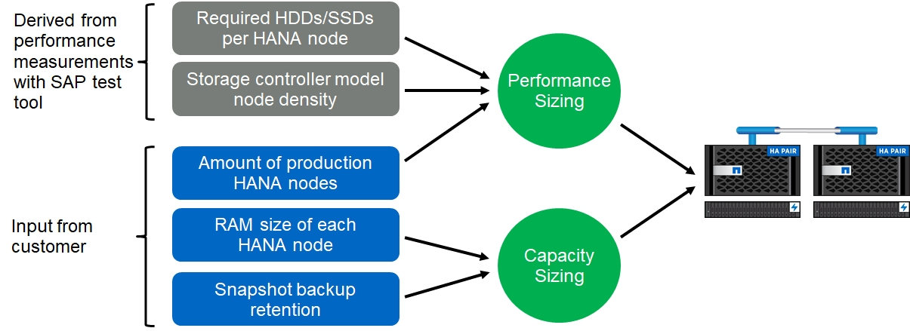

Storage sizing
Contributors
The following section provides an overview of performance and capacity considerations for sizing a storage system for SAP HANA.

|
Contact your NetApp or NetApp partner sales representative to support the storage sizing process and to create a properly sized storage environment. |
Performance considerations
SAP has defined a static set of storage KPIs. These KPIs are valid for all production SAP HANA environments independent of the memory size of the database hosts and the applications that use the SAP HANA database. These KPIs are valid for single-host, multiple-host, Business Suite on HANA, Business Warehouse on HANA, S/4HANA, and BW/4HANA environments. Therefore, the current performance sizing approach depends on only the number of active SAP HANA hosts that are attached to the storage system.
|
|
Storage performance KPIs are required only for production SAP HANA systems. |
SAP delivers a performance test tool, which must be used to validate the storage performance for active SAP HANA hosts attached to the storage.
NetApp tested and predefined the maximum number of SAP HANA hosts that can be attached to a specific storage model, while still fulfilling the required storage KPIs from SAP for production-based SAP HANA systems.
|
|
The storage controllers of the certified FAS product family can also be used for SAP HANA with other disk types or disk back-end solutions, as long as they are supported by NetApp and fulfill SAP HANA TDI performance KPIs. Examples include NetApp Storage Encryption (NSE) and NetApp FlexArray technology. |
This document describes disk sizing for SAS hard disk drives and solid-state drives.
Hard disk drives
A minimum of 10 data disks (10k RPM SAS) per SAP HANA node is required to fulfill the storage performance KPIs from SAP.
|
|
This calculation is independent of the storage controller and disk shelf used. |
Solid-state drives
With solid-state drives (SSDs), the number of data disks is determined by the SAS connection throughput from the storage controllers to the SSD shelf.
The maximum number of SAP HANA hosts that can be run on a disk shelf and the minimum number of SSDs required per SAP HANA host were determined by running the SAP performance test tool.
-
The 12Gb SAS disk shelf (DS224C) with 24 SSDs supports up to 14 SAP HANA hosts, when the disk shelf is connected with 12Gb.
-
The 6Gb SAS disk shelf (DS2246) with 24 SSDs supports up to 4 SAP HANA hosts.
The SSDs and the SAP HANA hosts must be equally distributed between both storage controllers.
The following table summarizes the supported number of SAP HANA hosts per disk shelf.
| 6Gb SAS shelves (DS2246) fully loaded with 24 SSDs | 12Gb SAS shelves (DS224C) fully loaded with 24 SSDs | |
|---|---|---|
Maximum number of SAP HANA hosts per disk shelf |
4 |
14 |
|
|
This calculation is independent of the storage controller used. Adding more disk shelves does not increase the maximum number of SAP HANA hosts that a storage controller can support. |
Mixed workloads
SAP HANA and other application workloads running on the same storage controller or in the same storage aggregate are supported. However, it is a NetApp best practice to separate SAP HANA workloads from all other application workloads.
You might decide to deploy SAP HANA workloads and other application workloads on either the same storage controller or the same aggregate. If so, you must make sure that enough performance is always available for SAP HANA within the mixed workload environment. NetApp also recommends that you use quality of service (QoS) parameters to regulate the impact these other applications could have on SAP HANA applications.
The SAP HCMT test tool must be used to check if additional SAP HANA hosts can be run on a storage controller that is already used for other workloads. However, SAP application servers can be safely placed on the same storage controller and aggregate as the SAP HANA databases.
Capacity considerations
A detailed description of the capacity requirements for SAP HANA is in the SAP Note 1900823 white paper.
|
|
The capacity sizing of the overall SAP landscape with multiple SAP HANA systems must be determined by using SAP HANA storage sizing tools from NetApp. Contact NetApp or your NetApp partner sales representative to validate the storage sizing process for a properly sized storage environment. |
Configuration of performance test tool
Starting with SAP HANA 1.0 SPS10, SAP introduced parameters to adjust the I/O behavior and optimize the database for the file and storage system used. These parameters must also be set for the performance test tool from SAP (fsperf) when the storage performance is tested by using the SAP test tool.
Performance tests were conducted by NetApp to define the optimal values. The following table lists the parameters that must be set within the configuration file of the SAP test tool.
| Parameter | Value |
|---|---|
max_parallel_io_requests |
128 |
async_read_submit |
on |
async_write_submit_active |
on |
async_write_submit_blocks |
all |
For more information about the configuration of SAP test tool, see SAP note 1943937 for HWCCT (SAP HANA 1.0) and SAP note 2493172 for HCMT/HCOT (SAP HANA 2.0).
The following example shows how variables can be set for the HCMT/HCOT execution plan.
…{
"Comment": "Log Volume: Controls whether read requests are submitted asynchronously, default is 'on'",
"Name": "LogAsyncReadSubmit",
"Value": "on",
"Request": "false"
},
{
"Comment": "Data Volume: Controls whether read requests are submitted asynchronously, default is 'on'",
"Name": "DataAsyncReadSubmit",
"Value": "on",
"Request": "false"
},
{
"Comment": "Log Volume: Controls whether write requests can be submitted asynchronously",
"Name": "LogAsyncWriteSubmitActive",
"Value": "on",
"Request": "false"
},
{
"Comment": "Data Volume: Controls whether write requests can be submitted asynchronously",
"Name": "DataAsyncWriteSubmitActive",
"Value": "on",
"Request": "false"
},
{
"Comment": "Log Volume: Controls which blocks are written asynchronously. Only relevant if AsyncWriteSubmitActive is 'on' or 'auto' and file system is flagged as requiring asynchronous write submits",
"Name": "LogAsyncWriteSubmitBlocks",
"Value": "all",
"Request": "false"
},
{
"Comment": "Data Volume: Controls which blocks are written asynchronously. Only relevant if AsyncWriteSubmitActive is 'on' or 'auto' and file system is flagged as requiring asynchronous write submits",
"Name": "DataAsyncWriteSubmitBlocks",
"Value": "all",
"Request": "false"
},
{
"Comment": "Log Volume: Maximum number of parallel I/O requests per completion queue",
"Name": "LogExtMaxParallelIoRequests",
"Value": "128",
"Request": "false"
},
{
"Comment": "Data Volume: Maximum number of parallel I/O requests per completion queue",
"Name": "DataExtMaxParallelIoRequests",
"Value": "128",
"Request": "false"
}, …
These variables must be used for the test configuration. This is usually the case with the predefined execution plans SAP delivers with the HCMT/HCOT tool. The following example for a 4k log write test is from an execution plan.
…
{
"ID": "D664D001-933D-41DE-A904F304AEB67906",
"Note": "File System Write Test",
"ExecutionVariants": [
{
"ScaleOut": {
"Port": "${RemotePort}",
"Hosts": "${Hosts}",
"ConcurrentExecution": "${FSConcurrentExecution}"
},
"RepeatCount": "${TestRepeatCount}",
"Description": "4K Block, Log Volume 5GB, Overwrite",
"Hint": "Log",
"InputVector": {
"BlockSize": 4096,
"DirectoryName": "${LogVolume}",
"FileOverwrite": true,
"FileSize": 5368709120,
"RandomAccess": false,
"RandomData": true,
"AsyncReadSubmit": "${LogAsyncReadSubmit}",
"AsyncWriteSubmitActive": "${LogAsyncWriteSubmitActive}",
"AsyncWriteSubmitBlocks": "${LogAsyncWriteSubmitBlocks}",
"ExtMaxParallelIoRequests": "${LogExtMaxParallelIoRequests}",
"ExtMaxSubmitBatchSize": "${LogExtMaxSubmitBatchSize}",
"ExtMinSubmitBatchSize": "${LogExtMinSubmitBatchSize}",
"ExtNumCompletionQueues": "${LogExtNumCompletionQueues}",
"ExtNumSubmitQueues": "${LogExtNumSubmitQueues}",
"ExtSizeKernelIoQueue": "${ExtSizeKernelIoQueue}"
}
}, …
Storage sizing process overview
The number of disks per HANA host and the SAP HANA host density for each storage model were determined with the SAP HANA test tool.
The sizing process requires details such as the number of production and nonproduction SAP HANA hosts, the RAM size of each host, and the backup retention period of the storage-based Snapshot copies. The number of SAP HANA hosts determines the storage controller and the number of disks required.
The size of the RAM, the net data size on the disk of each SAP HANA host, and the Snapshot copy backup retention period are used as inputs during capacity sizing.
The following figure summarizes the sizing process.

 Request doc changes
Request doc changes Edit this page
Edit this page Learn how to contribute
Learn how to contribute